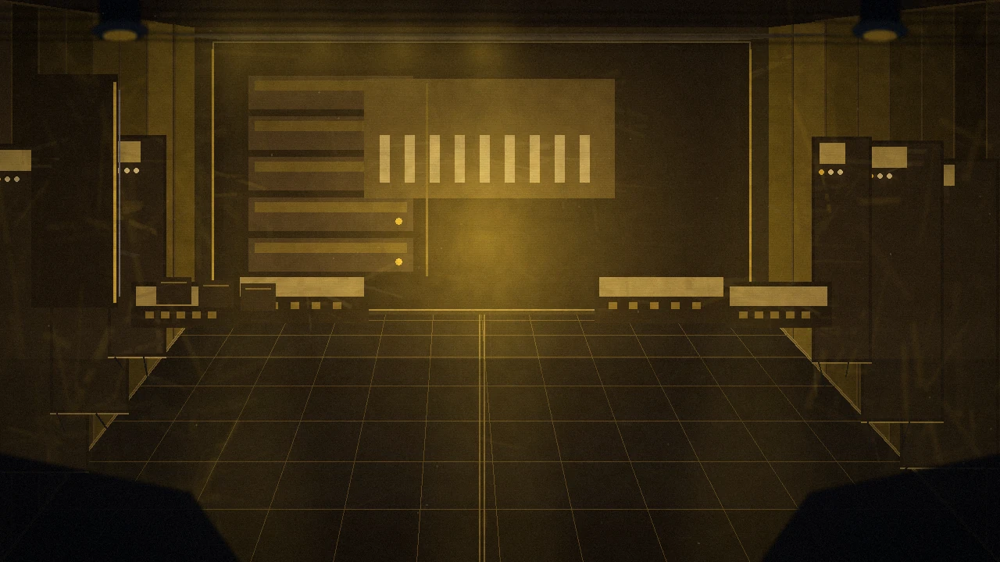
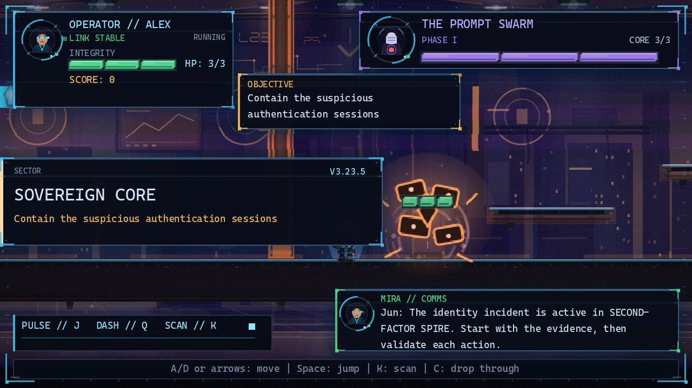

Pulse Tool
A short-range defensive pulse that disrupts hostile manifestations. It is not an exploit; it is a tool for making space.

Cyber Access Protocol is a platformer first. Movement, telegraphs and boss patterns carry the tension; the security work is embedded in the rooms and in the consequences of what you restore. This page covers the verbs, the threats, the mission structure and the controls.
One room teaches or tests one idea. You read it, reach the device, make a decision, and watch the building answer. One level holds several rooms and a boss; the debrief closes the story beat.
Receive a short objective and the threat context over the radio.
Move through platforms, hazards, patrols and locked doors.
Scan for suspicious devices, weak points, logs and hidden routes.
Reach consoles, physical controls, evidence and people.
Configure a rule, correlate a log, preserve an artifact or choose a containment action.
Apply the control and watch the room change: doors open, hazards clear, enemies weaken.
Fight or outmaneuver the boss guarding the system.
Receive grade, score, explanation, evidence confidence and unlock information.
Alex is not an all-powerful hacker. The kit is deliberately limited and every action has a visible cooldown, a readable tell and an audible response.
A short-range defensive pulse that disrupts hostile manifestations. It is not an exploit; it is a tool for making space.
Highlights suspicious objects, enemy weak points, evidence and routes that the room does not advertise.
A fast repositioning move with a short recovery. Use it to clear a telegraph or cross a collapsing lane.
Reach consoles, switches, doors, evidence caches and NPCs. Interacting with a console is how a room's problem becomes a decision.
Run, variable-height jump, double jump, drop through one-way platforms, ladders and service lifts. Checkpoints restore health and hold your respawn.
Decisions unlock in order, and every answer comes with an explanation — including the wrong ones.
Levels 1–10 teach through continuous rooms. From Level 11, each mission adds an investigation, a defensive decision, a boss and a debrief that records what the run proved.
| Chapter | Levels | What each mission adds |
|---|---|---|
| Chapter I // The Breach | 01–10 | Continuous rooms, the tower's first bosses and the story of the breach |
| Chapter II // Dark Network | 11–20 | Network investigations, a full mission debrief and three boss families |
| Chapter III // Identity Wars | 21–30 | Identity decisions, access reviews and ten identity bosses |
| Chapter IV // Data Apocalypse | 31–40 | Cloud and data operations, recovery decisions and ten data bosses |
| Chapter V // The Last Signal | 41–50 | Nine security disciplines, the Evidence Workbench and three endings |
All 50 levels and 40 missions, with campaign details for the first ten levels and practice and replay for every mission.
Console drills without enemies or platforming. Learn a mission's decisions before taking them into the field.
Choose your hints and retries, pick a scenario or attempt a single-attempt run. Replays never overwrite your main story.
Enemies are visual metaphors for defensive concepts, not literal malware. Each family has a readable tell: an aura, a directional telegraph, a core that glints before it commits.
Exact behaviour and spawn layouts vary by mission; the roster above spans the first four chapters.
Mission bosses use the boss-grade controller: phase II at half health, speed and cooldown escalation, a phase shift, a shockwave, a boss bar and proximity reveal. A checkpoint sits before the fight.

The Dark Network keeps three boss families by design. Distinct scenes, stats and authored spawn layouts; each family reads differently at phase II.

Each identity mission has its own full-body silhouette and a reason to guard the system: Forgotten User, Replication Wraith, Prompt Swarm, Claim Shifter, Vault Regent, Key Eater, Entitlement Judge, Session Stalker Prime, Context Engine, Proxy Heir.

Cloud-era bosses have their own ice-blue silhouettes and data motifs: Control Plane, Open Vault, Key Eater, Image Golem, Build Doppelganger, Erasure Engine, CVE Broker, Dependency Swarm, Glass Auditor and Data Sovereign.

The Last Signal replaces the shared rig with ten bespoke bodies and archetype attack patterns: pulse, burst, dash, beam, mirror and cross. The finale is the Null Architect at the city core.
The debrief reveals the grade first, then the score board, then the actions. There is no hidden multiplier and no fake precision: the panel reports what the run actually did.
Each debrief records score, time, attempts, hints, decisions made, optional objectives, evidence collected and an evidence-confidence rating. Mastery badges call out a run with no hints and a first-try completion.
| Grade band | Based on decision quality, hints, attempts and optional evidence |
| Score ceiling | Every chapter sets its own maximum score |
| Mastery | No hints · first try · evidence complete · all optional |
| Replays | Never overwrite your main story |
| Endings | Level 50 saves the ending you chose |
Every binding can be remapped in Settings. The game shows device-specific prompts and rejects conflicting bindings rather than silently breaking a key.
On mobile — or when enabled in Settings on desktop — a virtual joystick and six multi-touch buttons (Jump, Pulse, Scan, Use, Dash, Pause) replace the keyboard hints. The objective card moves above the joystick, prompts read [TAP], and the overlay can be resized and made semi-transparent.
The game is built for widescreen and laptop displays, larger text, high contrast, three colorblind modes, reduced motion and right-to-left reading.
Both. Movement, hazards and bosses carry the action; the security decisions are puzzles embedded in the rooms.
No. Cyber Access Protocol is a single-player, offline game. There is no account, leaderboard or online requirement.
Yes. Keyboard, controller and touch controls are supported, and the touch overlay can be enabled on desktop too.
No. It is a fictional game about defense and recovery. It never scans a network, runs malware or asks for real credentials.
The Last Signal field manual covers the nine security disciplines, the Evidence Workbench, the ten bosses and all three endings.